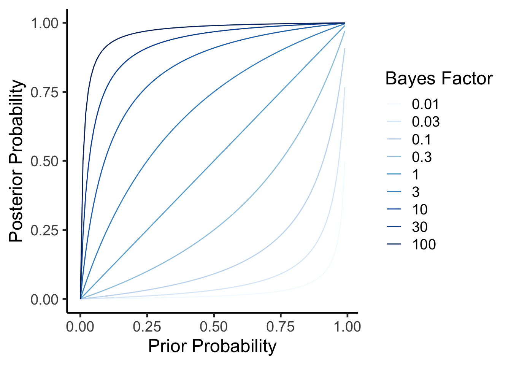
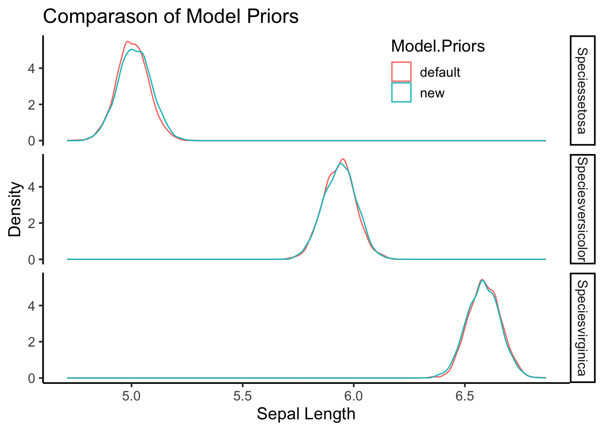

Bayesian Statistical Approaches
While we most often use classical frequentist statistical approaches, the norm in the molecular physiology field, I have been thinking a lot about Bayesian approaches, especially from a public health and nutrition perspective. In these fields the data tend to be less clear and I find myself updating my opinions often based on new data.
How Much Protein is Optimal Post-Exercise
One example is the question of how much protein is optimal post-resistance training workout. I had been teaching for years that the max was 20-30g and beyond that there wsa no advantage. This was based on several feeding experiments with whey protein looking at muscle protein synthesis as the endpoint. However in December a provocative paper (Trommelen et al. 2023) came out showing that up to 100g could be absorbed and stored and that the true maximum may be higher. There are several important differences in this study including a more natural protein source (milk proteins mostly a combination of whey and casein, compared with casein alone) and much more rigorous endpoints by the use of stable isotopes. I am a cynical person by nature, but this paper made me change my opinion greatly. In other words by prior hypothesis (max protein uptake is 20-30g) was updated by new data (this new paper) and my new posterior opinion suggests the levels might be higher. Fundamentally this happens to me a lot when newer (or better) data updates our understanding of the world and we update the likliehood of something being true. This is an example of inferential Bayesian reasoning. The math behind this is found on this Wikipedia Article on Bayesian Inference:
- \(P(H|E)\) is the probability of hypothesis given that the evidence (E) was obtained. Also known as the posterior probability.
- \(P(E|H)\) is the probability of observing the evidence given this hypothesis. This is also known as the likelihood.
- \(P(H)\) is the probability of the hypothesis before the data is observed (the prior probability). Think of this as how likely you think the result is before you see the data.
- \(P(E)\) is the probability of the evidence, or the marginal liklihood. This is true for all hypotheses being tested.
Together these are connected by Bayes’ rule
\[P(H|E) = \frac{P(E|H)P(H)}{P(E)} \] In other words my prior hypothesis (max protein post workout is 20-30g; \(P(H)\) was updated by this new data (represented by \(\frac{P(E|H)}{P(E)}\)) to give me an updated posterior probability of that hypothesis being true given this evidence (\(P(H|E)\)). Roughly I would say i had about 70% certainty that 20-30g was the maximum before the study but now only about ~10% certainty after reading that study, so re-arranging we would get:
\[ 0.1 = \frac{P(E|H)}{P(E)} \times 0.7 \] \[ \frac{P(E|H)}{P(E)} = 0.1/0.7 = 0.07 \]
0.07 is much less than one, so based on my rough estimate the study changed my opinion by \(1/0.07=~14\) fold. Another way to think about this is to compare the posterior probabilities of two hypotheses or models (\(BF=\frac{Pr(E|H_1)}{Pr(E|H_2)}\)) a value which is known as the Bayes Factor. The \(P(E)\) term is not expected to change depending on the hypothesis, because it is the overall probability of the observed data.
Interpreting a Bayesian Analysis
After this kind of analysis, there are two things we coould report. A poster probability (\(P(H|E)\); or its distribution) or a Bayes Factor. In one case we are saying that based on our prior probability and our baysian factor we report the posterior probability that a hypothesis is true given the evidence. This means that we use both the Bayes Factor and our prior probability (which could vary among investigators). If we report a Bayes Factor we are reporting how much we expect that these data should modify any prior probability (\(P(H)\)). This is an important distinction because a Bayes Factor does not make any claims about what the scientist initially thought about how likely a hypothesis was, so is more generalizable. Maybe I had some reason to think that the probability that protein intake max was 20-30g was 70% but another scientist thought it was closer to 90%, we would get different posterior probabilities but the same BF (0.07):
There is no p-value in either case. Here we are reporting either a Bayes Factor or a posterior probability (or both). For standardization, Bayes Factors are classified in several ways, for example by (Lee and Wagenmakers 2014) as:
\(<1-3\) anecdoctal or barely worth mentioning
\(3-10\) moderate evidence
\(10-30\) strong evidence
\(30-100\) extremely strong evidence
\(>100\) extreme evidence
How Does a Bayes Factor Affect Posterior Probability
Lets take a look at how these two results relate to each other. We can calculate a posterior probability from a prior probability and a bayes factor using the formula rearranged from above.
\(P(H|E) = \frac{BF \times P(H)}{BF \times P(H) + (1-P(H))}\)
As you can see, in all cases as your prior probability (\(P(H)\)) increases so does the posterior probability (\(P(H|E)\)). As your data (the Bayes factor) come in, if its positive it will incresae the posterior probability. In other words, the more plausible a hypothesis is before and the higher the evidence (as measured by the Bayes Factor) the more likely it is true.
How to perform Bayesian Analyses
There are several useful R packages to help with this, but i will focus on the brms package by Paul-Christian Bürkner. For comparason first lets look at a conventional analysis using the Iris dataset.
Code
library(knitr)
library(broom)
standard.fit <- lm(Sepal.Length~0+Species, data=iris)
standard.fit %>%
anova %>%
kable(caption="linear model for sepal length vs species",
digits=c(2,2,2,2,99))| Df | Sum Sq | Mean Sq | F value | Pr(>F) | |
|---|---|---|---|---|---|
| Species | 3 | 5184.89 | 1728.30 | 6521.68 | 0 |
| Residuals | 147 | 38.96 | 0.27 | NA | NA |
Code
standard.fit %>%
tidy %>%
kable(caption="linear model for sepal length vs species",
digits=c(2,2,2,2,99))| term | estimate | std.error | statistic | p.value |
|---|---|---|---|---|
| Speciessetosa | 5.01 | 0.07 | 68.76 | 0 |
| Speciesversicolor | 5.94 | 0.07 | 81.54 | 0 |
| Speciesvirginica | 6.59 | 0.07 | 90.49 | 0 |
According to this model there is a significant association between species and sepal length, with veriscolor being slightly smaller and virginica being larger than the reference (setosa). Both of these are significiant differences.
Using brms the model specification is the same, though it takes a few seconds longer to compute.
Code
library(brms)
brms.fit <- brm(Sepal.Length~0+Species, data=iris,
family = gaussian(),
sample_prior = TRUE) #required for hypothesis testingLets walk through this. First the model call looks similar to before. We expect the residual errors to be normally distributed so used a gaussian distribution (which is the same thing for this package). The main difference is that we should set our priors probabilities.
Setting Prior Probabilities for use in BRM
We may not have noticed this but in the call above we just used the default priors.
Code
prior_summary(brms.fit) %>% kable(caption="Default priors for a brms model of Sepal Length")| prior | class | coef | group | resp | dpar | nlpar | lb | ub | source |
|---|---|---|---|---|---|---|---|---|---|
| b | default | ||||||||
| b | Speciessetosa | default | |||||||
| b | Speciesversicolor | default | |||||||
| b | Speciesvirginica | default | |||||||
| student_t(3, 0, 2.5) | sigma | 0 | default |
This means that for the beta coefficients (b) teh priors were set as flat priors. The intercept wsa set as Student’s t distribution (three degrees of freedom, location 5.8, scale \(\sigma\) of 2.5) and the sigma (error) was set to a similar distributiob but centered around zero. Where did these defaults come from? Well the mean sepal lenghti is 5.8433333 which is why the intercept was set to that, this seems reasonable. But what about the distributions chosen
- Flat Prior means the b coefficient is equally likely to be any value, this is a non-informative prior.
- Students’ t distributions have heavier tails than normal/gaussian distributions so allow for outliers more easily to be modelled. Again, for the Interecept it is centered around the mean for the data.
This is the default, and presumes you know little about your data, of course since this is a Bayesian approach you could provide more or less information about the model parameters based on your prior knowledge.
There are three methods by which you could thinkg about your prior distributions. You could have weakly informative priors as we have above, or strongly informative priors if you know a lot about the system.
Lets say we have some information about Iris because we have been working on this for a while, but havent investigated the effect of species. We could therefore set our priors as follows:
- Intercept is a value of 5.8433333 with a sd of 0.8280661, fit to a normal distribution
- Beta coefficients are set to a value of zero with a sd of 0.5, also fit to a normal distribution.
- Set the residual standard deviation (sigma) as mean zero, three degrees of freedom with a sd of 0.5 set to a Student’s t distribution.
Both of these are somewhat non-informative priors and presume we something but not a lot about the data. We could also set lower or upper bounds for these distributions if needed (lb and ub) but we will skip that for now.
Code
sepal_length_mean <- mean(iris$Sepal.Length)
sepal_length_sd <- sd(iris$Sepal.Length)
new.priors <- c(
# Prior for the Intercept
set_prior(paste0("normal(", sepal_length_mean, ", ", sepal_length_sd, ")"), class = "b",coef=paste0("Species",levels(iris$Species)[1])),
set_prior(paste0("normal(", sepal_length_mean, ", ", sepal_length_sd, ")"), class = "b",coef=paste0("Species",levels(iris$Species)[2])),
set_prior(paste0("normal(", sepal_length_mean, ", ", sepal_length_sd, ")"), class = "b",coef=paste0("Species",levels(iris$Species)[3])),
# Prior for the residual standard deviation (sigma)
set_prior("student_t(3, 0, 2.5)", class = "sigma",lb=0)) #lower bound of zero (cant have a negative error)Now lets re-run the analysis
Code
brms.fit.new.priors <- brm(Sepal.Length~0+Species, data=iris,
family = gaussian(),
prior = new.priors,
sample_prior = TRUE) Comparing the Results
Code
fixef(brms.fit) %>% kable(caption="Fixed effects from default priors")| Estimate | Est.Error | Q2.5 | Q97.5 | |
|---|---|---|---|---|
| Speciessetosa | 5.004552 | 0.0716169 | 4.863133 | 5.147820 |
| Speciesversicolor | 5.935025 | 0.0727019 | 5.796505 | 6.080253 |
| Speciesvirginica | 6.589070 | 0.0726162 | 6.453320 | 6.732487 |
Code
fixef(brms.fit.new.priors) %>% kable(caption="Fixed effects from new priors")| Estimate | Est.Error | Q2.5 | Q97.5 | |
|---|---|---|---|---|
| Speciessetosa | 5.014446 | 0.0748329 | 4.868229 | 5.161032 |
| Speciesversicolor | 5.937639 | 0.0743950 | 5.791444 | 6.079245 |
| Speciesvirginica | 6.582515 | 0.0740688 | 6.440759 | 6.726932 |
You will notice that they give us similar (but not identical) regression coefficients, demonstrating that while the choice of priors does affect the results, the analysis is still relatively robust. This is represented graphically:
Code
#first extract the priors for each model
library(tibble)
combined.posteriors <-
full_join(as_draws_df(brms.fit) %>% rownames_to_column("rowid"),
as_draws_df(brms.fit.new.priors) %>% rownames_to_column("rowid"),
by='rowid',
suffix=c("_default","_new")) %>%
select(starts_with('b_Species')) %>%
rename('Speciesversicolor_default'='b_Speciesversicolor_default',
'Speciesversicolor_new'='b_Speciesversicolor_new',
'Speciesvirginica_default'='b_Speciesvirginica_default',
'Speciesvirginica_new'='b_Speciesvirginica_new',
'Speciessetosa_default'='b_Speciessetosa_default',
'Speciessetosa_new'='b_Speciessetosa_new') %>%
pivot_longer(cols=everything(),
names_sep="_",
names_to = c("Factor","Model.Priors"))
combined.posteriors %>%
ggplot(aes(x=value,
col=Model.Priors)) +
geom_density(alpha=0.5) +
facet_grid(Factor~.) +
labs(y="Density",
x="Sepal Length",
title="Comparason of Model Priors") +
theme_classic(base_size=14) +
theme(legend.position=c(0.75,0.9))
Nowhere in these results are no p-values, so how do we get a sense of confidence around a parameter?
Hypothesis Testing with BRMS
How do we get Bayes Factors and posterior probabilities. Lets say we want to test the hypothesis that Speciesvirginica was greater than the reference (setosa), that would mean the estimate would have to be greater than zero for this term
Code
hypothesis(brms.fit.new.priors, "Speciesvirginica > Speciessetosa") Hypothesis Tests for class b:
Hypothesis Estimate Est.Error CI.Lower CI.Upper Evid.Ratio
1 (Speciesvirginica... > 0 1.57 0.11 1.39 1.74 Inf
Post.Prob Star
1 1 *
---
'CI': 90%-CI for one-sided and 95%-CI for two-sided hypotheses.
'*': For one-sided hypotheses, the posterior probability exceeds 95%;
for two-sided hypotheses, the value tested against lies outside the 95%-CI.
Posterior probabilities of point hypotheses assume equal prior probabilities.This table shows the estimate, error and confidence intervals. The Evid.Ratio (infinity) is the Bayes Factor and the Post.Prob is the posterior probability. This suggests very high (extreme) confidence in that hypothesis being true. But now lets say we only care if virginica is 1.5 units greater than setosa. Those results look like this:
Code
hypothesis(brms.fit.new.priors, "Speciesvirginica > 1.5+Speciessetosa") -> new.priors.ht
new.priors.htHypothesis Tests for class b:
Hypothesis Estimate Est.Error CI.Lower CI.Upper Evid.Ratio
1 (Speciesvirginica... > 0 0.07 0.11 -0.11 0.24 2.76
Post.Prob Star
1 0.73
---
'CI': 90%-CI for one-sided and 95%-CI for two-sided hypotheses.
'*': For one-sided hypotheses, the posterior probability exceeds 95%;
for two-sided hypotheses, the value tested against lies outside the 95%-CI.
Posterior probabilities of point hypotheses assume equal prior probabilities.As you can see while the estimate is still positive (\(1.57-1.5=0.07\)), the Bayes Factor is less confident (2.76), and the posterior probability is now 73%.
Hopefully this gives you a sense on how a Bayesian approach can be applied in general. Next we will look at how to do some standard analyses commonly done with null hypothesis significance testing using brms.
Note this script used some examples generated by perplexity.ai and then modified further
References
Lee, Michael D., and Eric-Jan Wagenmakers. 2014. Bayesian Cognitive Modeling: A Practical Course.
Trommelen, Jorn, Glenn A. A. van Lieshout, Jean Nyakayiru, Andrew M. Holwerda, Joey S. J. Smeets, Floris K. Hendriks, Janneau M. X. van Kranenburg, et al. 2023. “The Anabolic Response to Protein Ingestion During Recovery from Exercise Has No Upper Limit in Magnitude and Duration in Vivo in Humans.” Cell Reports Medicine 4 (12). https://doi.org/10.1016/j.xcrm.2023.101324.
Session Info
Code
sessionInfo()R version 4.4.1 (2024-06-14)
Platform: x86_64-apple-darwin20
Running under: macOS Monterey 12.7.6
Matrix products: default
BLAS: /Library/Frameworks/R.framework/Versions/4.4-x86_64/Resources/lib/libRblas.0.dylib
LAPACK: /Library/Frameworks/R.framework/Versions/4.4-x86_64/Resources/lib/libRlapack.dylib; LAPACK version 3.12.0
locale:
[1] en_US.UTF-8/en_US.UTF-8/en_US.UTF-8/C/en_US.UTF-8/en_US.UTF-8
time zone: America/Detroit
tzcode source: internal
attached base packages:
[1] stats graphics grDevices utils datasets methods base
other attached packages:
[1] tibble_3.2.1 brms_2.21.0 Rcpp_1.0.13 broom_1.0.6 knitr_1.48
[6] tidyr_1.3.1 dplyr_1.1.4 ggplot2_3.5.1
loaded via a namespace (and not attached):
[1] tensorA_0.36.2.1 bridgesampling_1.1-2 utf8_1.2.4
[4] generics_0.1.3 stringi_1.8.4 lattice_0.22-6
[7] digest_0.6.36 magrittr_2.0.3 evaluate_0.24.0
[10] grid_4.4.1 RColorBrewer_1.1-3 mvtnorm_1.2-5
[13] fastmap_1.2.0 jsonlite_1.8.8 Matrix_1.7-0
[16] processx_3.8.4 pkgbuild_1.4.4 backports_1.5.0
[19] ps_1.7.7 gridExtra_2.3 Brobdingnag_1.2-9
[22] purrr_1.0.2 fansi_1.0.6 QuickJSR_1.3.1
[25] scales_1.3.0 codetools_0.2-20 abind_1.4-5
[28] cli_3.6.3 rlang_1.1.4 munsell_0.5.1
[31] withr_3.0.0 yaml_2.3.10 StanHeaders_2.32.10
[34] inline_0.3.19 rstan_2.32.6 tools_4.4.1
[37] parallel_4.4.1 rstantools_2.4.0 checkmate_2.3.2
[40] coda_0.19-4.1 colorspace_2.1-1 posterior_1.6.0
[43] vctrs_0.6.5 R6_2.5.1 stats4_4.4.1
[46] matrixStats_1.3.0 lifecycle_1.0.4 stringr_1.5.1
[49] callr_3.7.6 pkgconfig_2.0.3 RcppParallel_5.1.8
[52] pillar_1.9.0 gtable_0.3.5 loo_2.8.0
[55] glue_1.7.0 xfun_0.46 tidyselect_1.2.1
[58] rstudioapi_0.16.0 farver_2.1.2 bayesplot_1.11.1
[61] nlme_3.1-164 htmltools_0.5.8.1 rmarkdown_2.27
[64] labeling_0.4.3 compiler_4.4.1 distributional_0.4.0